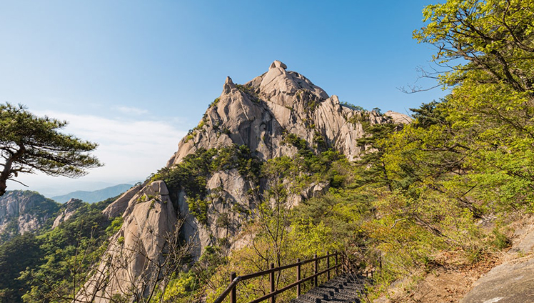
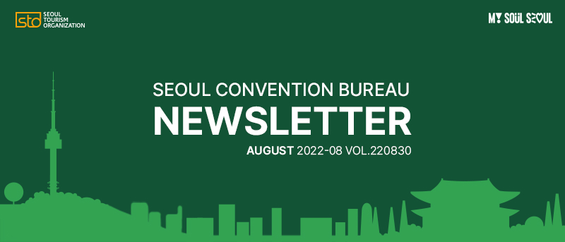
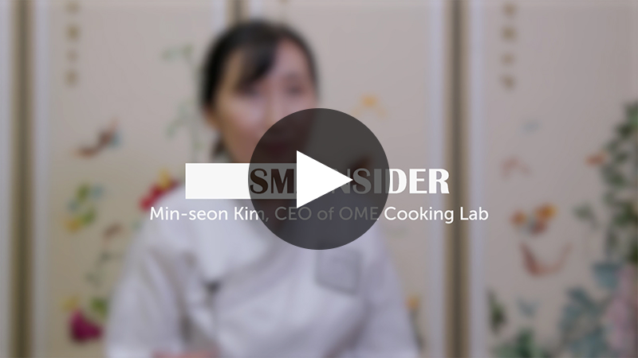
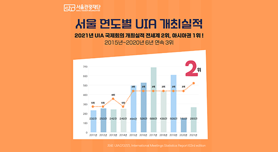
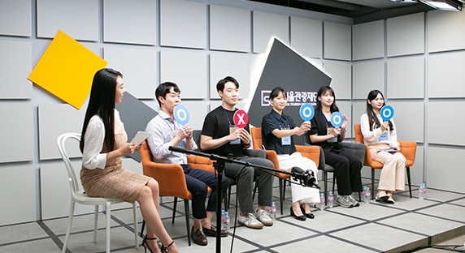
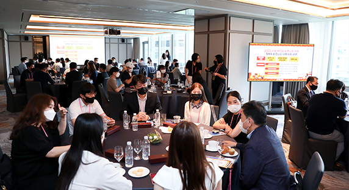
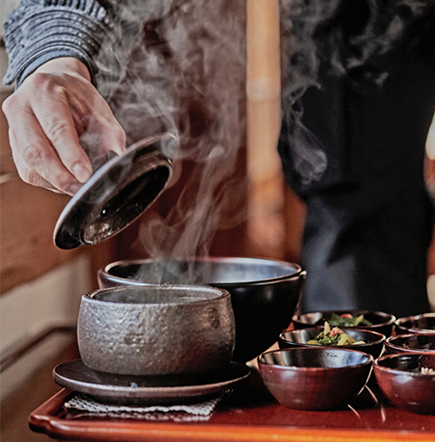
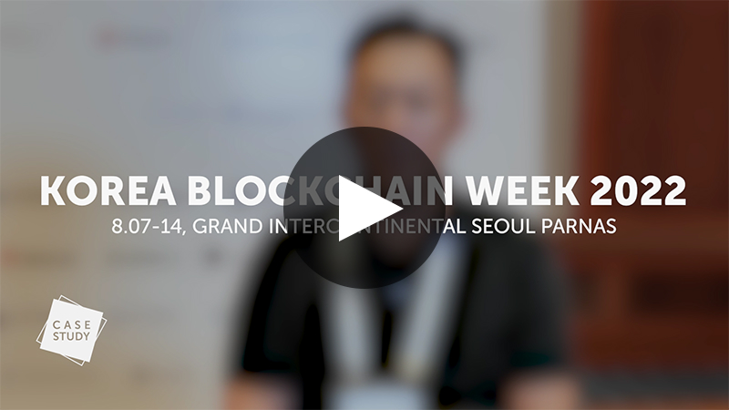
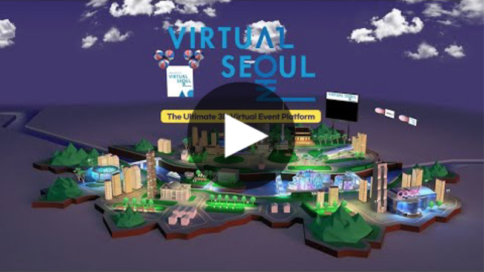
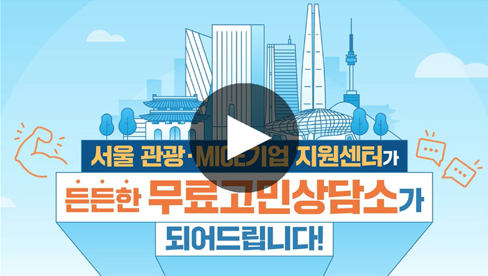

"몸만 오세요!" 또 다른 서울이 보입니다.
서울 도심 등산관광(Seoul Hiking Tourism) 체험기
'서울도심등산관광센터'는 등산을 하려는 외국인을 대상으로 등산복과 등산화를 무료로 빌려주고, 코스 안내와 안전 정보를 제공하는 곳이다. 마이스 참가자들이 행사 후에 방문한다 해도 등산을 즐길 수 있게 준비돼 있다. 짐이 많아도 편리하게 이용할 수 있다.원문 보기

2022년, 서울을 선택해야 하는 이유
코로나 팬데믹을 거치며 '지속가능관광'과 '공정관광'이 글로벌 MICE업계에서 주요한 흐름으로 거론되고 있습니다. 이 키워드들은 관광객이 일시에 몰리면서 발생하는 각종 쓰레기부터 비닐, 플라스틱, 탄소배출, 자연훼손 등 코로나 이전 일부 관광도시에서 발생한 과잉관광 문제를 극복하는 열쇳말이기도 합니다.
특히 공정관광은 지역주민의 삶과 문화를 존중하고 자연을 보전하는 지속가능한 관광을 이루려는 목표이고요. 보고 먹고 체험하는 기존 관광의 틀을 깨는 아이디어가 필요한 시점입니다. 서울관광재단은 앞으로 '지속가능·공정MICE'를 위한 지원을 아끼지 않을 것입니다.

"몸만 오세요!" 또 다른 서울이 보입니다.
서울 도심 등산관광(Seoul Hiking Tourism) 체험기
'서울도심등산관광센터'는 등산을 하려는 외국인을 대상으로 등산복과 등산화를 무료로 빌려주고, 코스 안내와 안전 정보를 제공하는 곳이다. 마이스 참가자들이 행사 후에 방문한다 해도 등산을 즐길 수 있게 준비돼 있다. 짐이 많아도 편리하게 이용할 수 있다.원문 보기

외국인 체험형 쿠킹클래스가 코로나에도 살아남은 비결은?
김민선 오미요리연구소 대표 [인터뷰]
8년 전, 전통시장 9개가 모여있는 서울 동대문구에서 한 관광벤처기업이 지속가능·공정관광의 실마리를 찾으려 문을 열었다. 외국인 관광객을 대상으로 한식을 체험하는 쿠킹클래스를 주로 진행하는 오미요리연구소, 그 클래스의 출발지점은 지하철역 출구다.원문 보기




이너 디톡스를 위한 템플스테이
도심을 떠나지 않고도 몸과 마음에 평온이 깃드는 시간, 명상을 통해 나를 만나고 사계가 깃든 채식 식단으로 몸을 일깨우는 이너 디톡스의 시간을 경험한다.원문 보기

개최 5회만에 '참가자 1만명' 눈앞에… KBW의 고속성장 비결, 코리아블록체인위크2022(KBW2022)
130여 명의 블록체인 분야 글로벌 리더들이 서울 곳곳에서 일주일간 갑론을박을 벌이며 새로운 비즈니스 시장을 창출해냈던 코리아블록체인위크(KBW)가 지난 8월 14일 '2023년 세계 3대 블록체인 이벤트 등극'을 기대하며 막을 내렸다.원문 보기

서울 관광·MICE기업인의 든든한 고민 상담소!
<서울 관광·MICE기업 지원센터> 홍보영상
